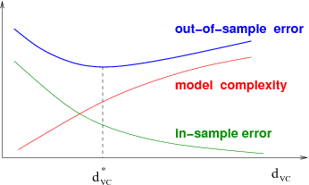

This course introduces students to the basic knowledge representation, problem solving, and learning methods of artificial intelligence. Upon completion of this course, students should be able to develop intelligent systems by assembling solutions to concrete computational problems; understand the role of knowledge representation, problem solving, and learning in intelligent-system engineering; and appreciate the role of problem solving, vision, and language in understanding human intelligence from a computational perspective.
This course provides a broad introduction to machine learning, datamining, and statistical pattern recognition. Topics include: (i) Supervised learning (parametric/non-parametric algorithms, support vector machines, kernels, neural networks). (ii) Unsupervised learning (clustering, dimensionality reduction, recommender systems, deep learning). (iii) Best practices in machine learning (bias/variance theory; innovation process in machine learning and AI). The course will also draw from numerous case studies and applications, so that you'll also learn how to apply learning algorithms to building smart robots (perception, control), text understanding (web search, anti-spam), computer vision, medical informatics, audio, database mining, and other areas.

This is an introductory course in machine learning (ML) that covers the basic theory, algorithms, and applications. ML is a key technology in Big Data, and in many financial, medical, commercial, and scientific applications. It enables computational systems to adaptively improve their performance with experience accumulated from the observed data. ML has become one of the hottest fields of study today, taken up by undergraduate and graduate students from 15 different majors at Caltech. This course balances theory and practice, and covers the mathematical as well as the heuristic aspects.
Computer Vision has become ubiquitous in our society, with applications in search, image understanding, apps, mapping, medicine, drones, and self-driving cars. Core to many of these applications are visual recognition tasks such as image classification, localization and detection. Recent developments in neural network (aka “deep learning”) approaches have greatly advanced the performance of these state-of-the-art visual recognition systems. This course is a deep dive into details of the deep learning architectures with a focus on learning end-to-end models for these tasks, particularly image classification. During the 10-week course, students will learn to implement, train and debug their own neural networks and gain a detailed understanding of cutting-edge research in computer vision. The final assignment will involve training a multi-million parameter convolutional neural network and applying it on the largest image classification dataset (ImageNet). We will focus on teaching how to set up the problem of image recognition, the learning algorithms (e.g. backpropagation), practical engineering tricks for training and fine-tuning the networks and guide the students through hands-on assignments and a final course project. Much of the background and materials of this course will be drawn from the ImageNet Challenge.
Natural language processing (NLP) is one of the most important technologies of the information age. Understanding complex language utterances is also a crucial part of artificial intelligence. Applications of NLP are everywhere because people communicate most everything in language: web search, advertisement, emails, customer service, language translation, radiology reports, etc. There are a large variety of underlying tasks and machine learning models behind NLP applications. Recently, deep learning approaches have obtained very high performance across many different NLP tasks. These models can often be trained with a single end-to-end model and do not require traditional, task-specific feature engineering. In this winter quarter course students will learn to implement, train, debug, visualize and invent their own neural network models.
Deep Learning is one of the most highly sought after skills in tech. We will help you become good at Deep Learning. In five courses, you will learn the foundations of Deep Learning, understand how to build neural networks, and learn how to lead successful machine learning projects. You will learn about Convolutional networks, RNNs, LSTM, Adam, Dropout, BatchNorm, Xavier/He initialization, and more. You will work on case studies from healthcare, autonomous driving, sign language reading, music generation, and natural language processing. You will master not only the theory, but also see how it is applied in industry. You will practice all these ideas in Python and in TensorFlow, which we will teach.